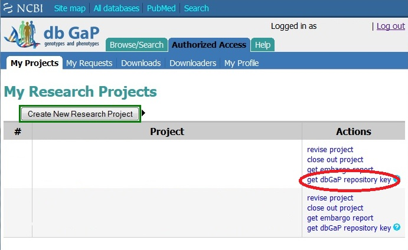

Protected Data Usage Guide
The following guide will outline the configuration of the SRA Toolkit for use with protected data from dbGaP. Detailed information regarding the usage of individual tools in the SRA Toolkit can be found on the tool-specific documentation pages.
Steps for using the SRA Toolkit to access dbGaP data
- User must have an up to date version of the SRA Toolkit installed.
- Users that wish to access controlled-access data must first apply for approval. Please review the process at the dbGaP Authorized Access page.
- Once granted access to a project, the PI may login and click the "get dbGaP repository key" link next to the project to download the repository key. This file should be closely guarded. 
- For users that do not yet have an approved project, the test key prj_phs710EA_test.ngc is available for accessing a copy of 1000 Genomes data from NCBI. Downloading this key will allow users to test their toolkit configuration on encrypted data that is consented for public access.
-
Import the dbGaP repository key to SRA Toolkit, either by
Visual SRA-Toolkit configuration
Command line Toolkit configuration
Visual SRA Toolkit configuration
-
Go to the "bin" subdirectory for the Toolkit and run the following command line:
./vdb-config -i - Review any settings presented to ensure they are correct. Then tab to "Import Repository Key" button and press enter or space.
- This will bring up the file navigation dialog (see below).
- Navigate to the location of the previously downloaded .ngc file for the project.
- and press tab to get to the file list and select the .ngc file.
- Press tab to get to "OK" button and press enter or space
- You will be prompted to confirm the import
- Then the import will be confirmed
-
You will be asked to change the location where the projects files will be stored.
Genomics datasets are quite large; you may need 100's of GB of free space. This is the primary concern when choosing the location. Do you have enough free space there for what you intend to do?
A workspace is the directory which contains all the data and analysis for a project. Each dbGaP project must have its own workspace that is separate from other protected project workspaces. -
If you choose "Yes", this will bring up the file navigation dialog (see below).
If you already know the path to the directory, you may use the Goto button to directly enter that path.
Once you have entered or navigated to the correct directory, press tab to get to the OK button to return to the previous screen. - Once you are back to the main screen, use tab to get to the "Exit" button and press enter or space
-
In order to access the projects data, you will need to change directory or "cd" to the project's workspace.
Once there, all the project's data is available to you. You do not need to (or even want to) decrypt it manually.


Command line SRA Toolkit configuration
-
Use vdb-config to import the repository key.
vdb-config --import prj_phs710EA_test.ngc
Accessing Encrypted dbGaP Data
-
The SRA Toolkit vdb-decrypt
program supports the decryption process for dbGaP phenotype and genotype files,
however SRA files do not need to be decrypted, and the utility will ignore attempts to do so.
vdb-decrypt < encrypted_file > -
VERY IMPORTANT - The SRA Toolkit will only decrypt and download project files when excecuted from within the project's workspace directory.
Below are some examples using the test key
prj_phs710EA_test.ngc
running from the default import location for the repository key and the SRA toolkit available in the user's path.
Information about the fastq-dump program and options used in the example can be found on the tool's documentation page.
~/ncbi/dbGaP-0 $ fastq-dump -Z -X 5 SRR1219902 -
The sam-dump
utility can also be used to directly access aligned data in a dbGaP study without the need to download the data files first.
~/ncbi/dbGaP-0 $ sam-dump --aligned-region 15:28196787-28197287 SRR1219902 -
Some changes from earlier versions of the Toolkit:
- The SRA Toolkit will work with encrypted SRA data files, there is no need to decrypt the read data.
- Users do not need to explicitly download the SRR (SRA Run) files. The tools such as fastq-dump or sam-dump can download all or part of an SRR file and reference files automatically. Please see the usage instructions for the individual Toolkit utilities (e.g., fastq-dump) for details.